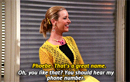

Chapter 4 LESSON 1: Data Types
Data types are the fundamental building blocks of almost every program you will ever write in R. They define the data type a object can contain and as an effect the types of operations that can be performed on that objects.
In simpler words, data types are like different kinds of LEGO blocks you use to build things. They tell the computer what kind of information it’s dealing with, like numbers or words, and what you can do with that information, like adding numbers together or putting words together as a sentence for example, but in R, we can do so much more with these.
In R, we have four main types of data and they are: - Numeric (num) - Integer (int) - Logical (logi) - Character (chr)
4.1 Numeric Data Type
Numeric data types are data types that are either whole numbers like
10, 3, 78, 90, 55 and 7, or decimals like 3.14, 7.5, 49.7, 3.3334, 0.5
and 123.2245. You will see this data type represented by the
abbreviation num in R. In short, in R, if you see any kind of number
with a decimal point, it is a numeric data type.
4.2 Integer Data Type
Integer data types refer to data types that are whole numbers, and do
not have a decimal point like -5, 45, 33, 7, 9 and 67. They are usually
represented with an L at the end so, 7L is an integer data type.
They are represented by the abbreviation int in R.
4.3 Logical Data Type
Logical or boolean data types represents truth values, either TRUE
or FALSE. Logical data types are used for comparisons and conditional
statements in R and are represented by logi.
4.4 Character Data Type
Character data types are used to refer to text, string or alphanumeric
data in R. They are represented by chr.
Do note that, whenever you are working with text data, you need to wrap it inside single or double quotes for R to understand you are working with a character data type else R will throw up an error.
You remember when you typed in your first line of R code in the console and hit enter it printed your name? Try typing your first name but this time, do not wrap it in quotes. Just literally type your name in the console and hit enter.
R should throw up an error like Error: object ... not found. Why? This
is because in R whenever you do not wrap a string or text in quotes, it
reads it as an object and it will throw up an error because it was
unable to find that object.
This leads us to the last part of this lesson on data structures, interactive examples. But before we need to learn one more concept for this lesson.
You notice whenever you type in a data type, try typing in a numeric, logical or character value in the code chunk below. Notice that it prints the value and then that’s it, it disappears?
This behavior is not so helpful when programming. Sometimes we need to store data and then use it later on in our code. This helps make our program neater.
4.5 Variables
Enter variables! In R, a variable is a named storage location that holds data, and its value can be changed or updated during the course of a program. Variables are fundamental for storing and manipulating data in R. When you assign a value to a variable, you are creating a reference to a specific location in memory where that value is stored and you can use that value by referencing the variable name.
In R, the syntax for assigning a variable is simple:
variable_name <- value
Where variable_name is the name of your variable and <- is the
assignment operator in R and value is the value being assigned to that
variable
Think of a variable as a container for storing different objects. Supposing we have a container that has cookies, we label the container as cookies. We have another container that stores pencils, we label that as pencils and another that stores water, we can label that as water. So what happens is, each container stores a quantity of something, in programming we refer to that as variables. Let us say we have 5 cookies in the cookies container and we have 10 pencils in the pencils container and we have just water in the water container. We can represent that programatically like this:
When we print our variables, voila! We still have them stored safely for us. We can decide to change the values the variable contain and it will update for us and we can have the new values available for us in our code.
In R, I would in fact discourage from hardcoding values as much as possible. Try to store values in variables so you can have them accessible later on in your program. This helps a lot with debugging and when you figure out something is wrong, you only need to update the value you assigned to the variable and your code will run as normal, this helps you avoid updating every instance of the value if you hardcoded it.
Try to live up to the famous words uttered by John F. Woods that says: “Always code as if the guy who ends up maintaining your code will be a violent psychopath who knows where you live.”
Always strive for readability.
Let us now truly start playing with the data types we’ve learned and combine the concept of variables with it.
4.6 Numeric & Integer Data Types
In the next two code chunks below, we will assign different numeric and then integer values and then print them to our console.
We assigned and printed numeric data types.
Let us see the same thing with an integer too. Integers, if you remember are whole numbers. Let us create 3 variables with names of 3 kids: Abena, Kofi and Yaa and assign their ages to these variables
Voilà! We assigned and printed our integer variables.
Time to try interactive hands on coding! In other words, GET SCHWIFTY!!
Let us dial it back down to primary school. You have 2 pens, 3 pencils, an eraser, and a sharpener. Can you code these values below and assign them to their respective descriptive variables?
Remember to assign all of the values to their respective variables and then print them.
4.7 Basic Numeric and Integer Data Type Operations
We can perform arithmetic operations with numeric and integer data types in R.
The operators for performing these operations are the same ones you learnt back in school.
HAHA just kidding. Arithmetic operators are similar in R, with some slight differences for some operators.
+: addition-: subtraction*: multiplication/: division%%: modulus (remainder for division)^: exponent
Instead of regular x, in R you use the asterisk operator, *, to
perform multiplication and the / to perform division. Modulus is used
to find the remainder of a division operation.
IMPORTANT: the order of operations in mathematics, BODMAS or PEMDAS,
depending on where you are coming from, still holds true in R
We will not go through the really basic operators like addition, subtraction, division and multiplication in the following examples we will see how the modulus and exponent operators works in R.
Perfect! So as we already know, 27 divided by 3 leaves no remainder and also, 27 raised to the power 3 is 19,683. This is how to use the modulus and exponent operators. But before, I would like to see you try to use them so you feel comfortable with it.
Perfect we now know how to perform arithmetic operations in R. Now let’s get a little lazy.
So if you took my advice, it is always easier in R to perform operations if you do not hard-code values. It makes your code easier to maintain and you can perform operations with your variables even more easily.
Let us take a random scenario for example: say we wanted to calculate the area of a triangle in R. We know the formula for finding an area for finding the area of a triangle is:
Area = 1/2 * Base * Height
Supposing we had a triangle with a base of 15cm and a height of 23cm, let us calculate its area!
Great! Our area is 172.5 centimetres! If we had a new triangle with base
and height to be 8cm and 12 cm respectively, we only need to update the
base_in_cm and height_in_cm variables and we will still get the
correct answer.
48 centimeters! Our code still run without any error. If we typed the values directly in our code and supposing there were numerous instances where we needed to use those values in our code, we would have to update each and every single one of them.
Remember we learnt it is recommended to always avoid hardcoding when possible? In our triangle example, we could have assigned the value 0.5 to a variable and use it in our code, but for the area formula for triangles, it is a constant so we can leave it like that. If you want to be really neat about this when you have numerous instances and do not want to hard-code, you can assign it to a variable if you so desire.
The area of a rectangle is expressed as:
Area = l * w,
where l is the rectangles length and w is its width.
Now given a rectangle of dimensions 10cm and 4cm length and width respectively, can you calculate the area of this rectangle below?
4.8 Basic Character Data Type Operations
We can perform numerous operations with character data in R. You will see this referred to as strings also. Strings sounds cooler so let us use this term for the purpose of this lesson!
We will learn some basic string operations and then try our hands on a couple of examples.
4.8.1 String Operations in R
We will learn about five string operations and they are:
- Concatenation
- String Length
- Changing character case
- Trimming whitespace
- String interpolation
Concatenation refers to joining two strings together. In R, we can use
the paste() function.
Yes and now we have the full name of every man’s dream woman all around the globe, thank you!
We can also check for the number of characters or length of a given
string with a function known as nchar()
Before we discuss what happened up there, in R you can define an empty
string by typing two double quotes without leaving space in between the
quotes. If there is whitespace between the two double quotes, R
interprets the whitespace as a character and this behavior is very
important to understand as in R, "Jones" and "Jones " are not the
same string. We will bring this concept up again later when we talk
about checking for equality in R.
Back to the code chunk above. We can see that, R counts whitespace as a
character when we are checking for the length of a script. Our code
returned the length of different strings supplied to it, 11, 43, 0
and 1. Strings are not always one word or two, they can be long
sequences of text and in R, we can always find out the length by using
the nchar() function
Changing cases in R referes to converting a string to all lower or
upper case. The respective operations can be performed by using
tolower() and toupper().
Very straightforward! These functions convert your strings to lower and uppercase. It is useful to note that, these functions will convert all alphabetic characters in your string.
Trimming whitespace refers to removing leading and/or trailing
whitespace in a string. In R, we can do that with the trimws()
function like this:
The function removed the trailing whitespace for us. What if there was leading and trailing whitespace? Can we trim that too? Of course!
That worked too! The function by default trims leading and trailing whitespace by default and has extra arguments if you want to do some more advanced, you know, trimming. In R, to find out more about how to use a function, highlight said function and press F1 to view the function documentation.
Finally, we can perform a little bit of magic which may have gotten us in hot water if were at Salem back in the day. Just kidding this is not as impressive but we will talk about string interpolation. You remember how we said variables are important because they allow reuse later in our program? This might be a very good graphic illustration to see how that works.
Supposing we have a program that takes in a user’s name and age and for example we have Bob who is 16 years old, says: “Happy Birthday, Bob, you are sixteen years old today!”, We can do that in R like this
And that is basic string interpolation using paste(). We can
interpolate as many variables into a string as we want but be sure we do
that if we only need to. Interpolation is a dynamic way to work with
strings so we do not have to keep defining variables over and over
again. If for example our complex program which performs interpolation
finishes saying happy birthday to Samantha and it gets a new input, all
it needs to do is update the input with the new name and age and then
just print it.
Change the name and age below to your name and a theoretical age and then run the code to check if it works as expected. Remember to type the age in words.
We will go off-route and learn one final character data type operation
using a function called substr(). When you get old and gray from
programming in R you will deal with a lot of messy data an by then, this
function will come in handy. So this substr() function is used to
extract a part of a string you specify it to extract.
We were supposed to learn a concept called indexing in our next chapter but let me introduce it to you now. It is called the index.
The index is basically the position of an element in a given data structure. In more technical terms, it serves as a pointer or locator of an element or elements within a data structure. How is that relevant to us?
Well the substr() argument in this context of extracting parts of a string takes 3 arguments. The first argument is the string that you want to work with, the start index and the end index. The syntax iis simple and it is as follows:
substr(x, start, stop)
where x is the string.
Let us see this in action! Let us say you come across a scrambled word called “250Marie9”. This makes absolutely no sense and you want to only extract the name since that is something you can understand. Let us do this together in the code chunk below.
Let us try it again this time with a different string.

Don’t ask me how I got that, pal but say this is how Phoebe wrote it down for me: “Phoebe:853 557-7020”. We can extract Phoebe’s phone number like this below.
Perfect! Now don’t call her, please!
That wraps it up for Lesson 1. I have to say here that, the biggest advantage and disadvantage in R is, you can mostly do what you like. You can be flexible and use whatever “legal” method works for you but once you do not understand concepts enough to apply them, your implementation becomes flawed and you introduce bugs into your program. So inasmuch as you can be flexible when writing your code, always make sure you are implementing solutions correctly. Failure to do this is a common source of errors when programming in R.
There are other functions you use to convert data types into data types
you want to work with. Did you notice when you printed phoebe_number
the numbers were wrapped in quotes, making it a string? You cannot
perform any numeric operations with that but why? In R, you can coerce a
data type into another if it is compatible. We know that was a phone
number for example and we can store that as a string because it has some
symbols and whitespace in it. If we had a valid number wrapped in a
string like "85", we can convert it to an integer using the
as.integer() function. watch this below:
Do you notice the output? That is how effective data type conversion works. There is a function to convert to each of the data types we’ve learned about and they are as follows:
- numeric: as.numeric()
- integer: as.integer()
- character: as.character()
- logical: as.logical()
But do not worry so much about them now, we will discuss this in a latter lesson.
Below are some links you can read further on to just understand:
4.9 LESSON 1: CODE CHALLENGE
Perform the following operations on variables a and b, which contain the values 15 and 3 respectively.
- add a and b
- subtract b from a
- multiply a by b
- divide b by a
Define the variables a and b before you begin all your operations. Save the result of each operation to a variable and print your result after.
Given the formula for finding the volume of a sphere, calculate the volume of a sphere with a radius of 25cm. Find out more about the formula for calculating this here
Given the string: “XXX-951ALLEYDIAGON,HOGWARTS566-418 7587dumbledore@hogwarts.edu”, perform the relevant operations on it and produce the following:
- address should be: 951 DIAGON ALLEY, HOGWARTS
- Dumbledore’s email
- school telephone number
These three should be separate variables. When you obtain you complete your operations, ave the school address to the variable
address, Dumbledore’s email asemailand telephone astele_num.